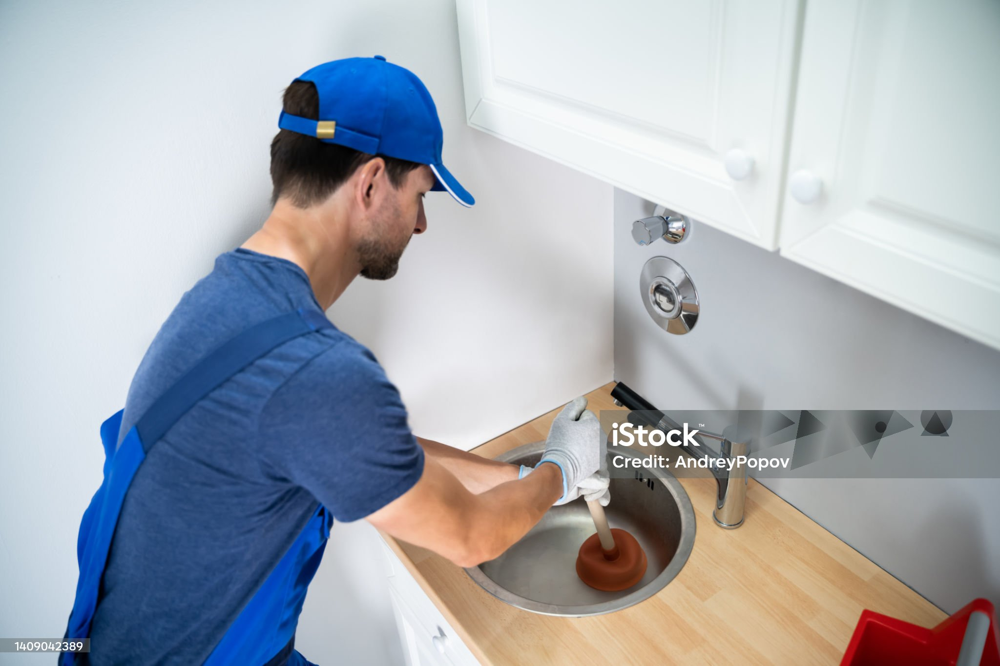
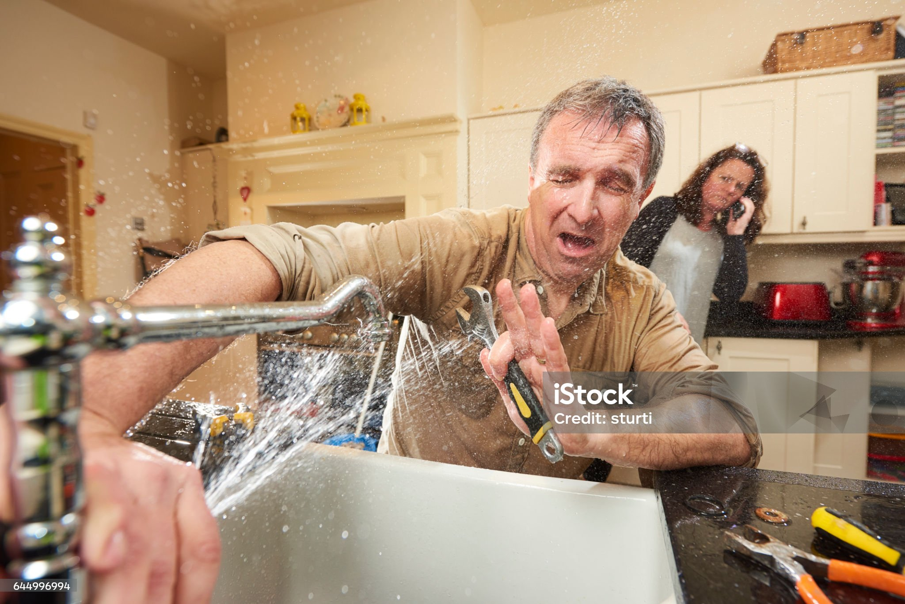
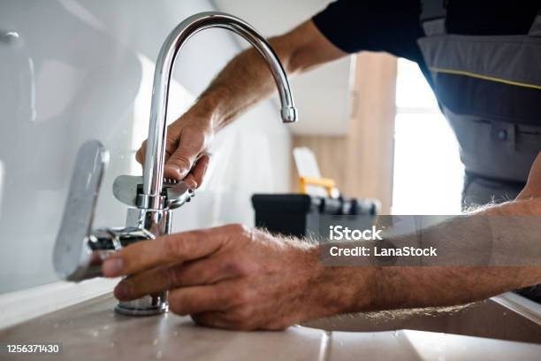

Desatascos
Solución rápida y eficiente para desatascos en tu hogar o negocio.
Llegamos a tu domicilio en menos de 45 minutos. Servicio urgente 24/7

Solución rápida y eficiente para desatascos en tu hogar o negocio.

Solucionamos cualquier tipo de fuga.

Amplio catálogo con variedad de precios.
15 años de experiencia en el sector nos avalan. Rapidos, profesionales y a su servicio.
Calle Falsa 123, Ciudad, País
Toda la Ciudad